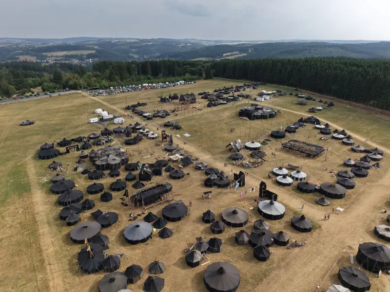

Führer:innenkurse
Grund- und Aufbaukurse für die Leitung von Meuten, Sippen und Stämmen.
Über uns · Unser Bund
Die Christliche Pfadfinderschaft Deutschlands e.V. ist ein bundesweiter Jugendbund mit rund 4.000 Mitgliedern – von Hamburg bis zum Schwarzwald und zum Chiemsee. Ihr Motto: Pfade finden seit 1921.
Wer wir sind
Grundlage der CPD ist der christliche Glaube. Daraus folgen Nächstenliebe, Toleranz und Einsatz für die Gemeinschaft. Unsere Arbeit wurzelt im Pfadfindertum und in der deutschen Jugendbewegung: selbstgesuchte Abenteuer auf Fahrt und Lager und eine erlebnisnahe Vermittlung des Glaubens.
Ziel ist, dass junge Menschen zu verantwortungsbewussten, demokratisch denkenden Persönlichkeiten heranwachsen. Die CPD steht allen offen – unabhängig von Herkunft, Geschlecht oder Alter – und lebt ökumenische Offenheit.

Geschichte
Gut aufgestellt
Der Bundeshof
Seit 1998 hat die CPD ihren eigenen Bundeshof in Birkenfelde im thüringischen Eichsfeld – umgeben von Laubwäldern, nahe der Werra und den Burgen Hanstein und Ludwigstein. Mit Gruppenräumen, Kapelle, Werkstatt, Großküche und Obstwiese als Zeltplatz steht er allen CPD-Gruppen offen.
Mehr zum Bundeshof
Schulung & Schutz
Wer bei uns eine Gruppe leitet, besucht dafür verpflichtende Führer:innenkurse – vom Meutenhelfer:innen- und Sippenführer:innenkurs bis zum Stammesführer:innenkurs. Die Schulungen erfüllen die Kriterien der Juleica, der bundesweiten Jugendleiter:innen-Card.
Grund- und Aufbaukurse für die Leitung von Meuten, Sippen und Stämmen.
Knappen-, Späher- und Kreuzpfadfinderkurs für die persönliche Entwicklung.
Schutzkonzept, Verhaltensgrundsätze, verpflichtende Präventionsschulung und eigene Präventionsbeauftragte. Mehr erfahren
Aktuelles, Bundesführung, Bundeslager und vieles mehr findest du auf der Website der CPD.